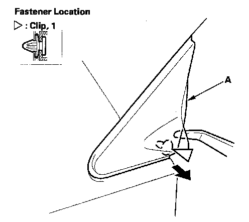
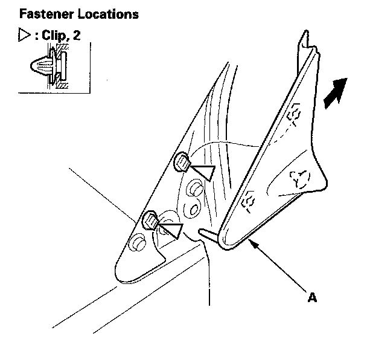
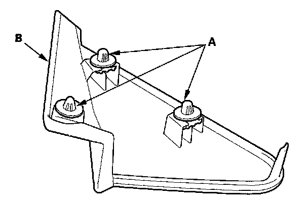
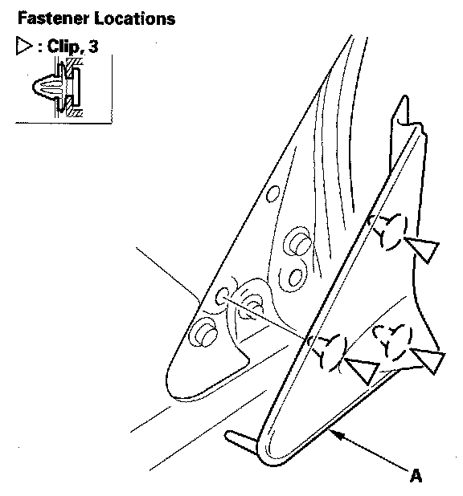

Exterior Moulding / Trim: Service and Repair
A-Pillar Corner Trim ReplacementSpecial Tools Required
KTC trim tool set SOJATP2014 *
* Available through the American Honda Tool and Equipment Program
NOTE:
- Take care not to scratch the trim and body.
- Use the appropriate tool from the KTC trim tool set to avoid damage when removing components.
1. Open the front door.

2. Using a trim tool, detach the bottom clip of the A-pillar corner trim (A).

3. Gently slide the A-pillar corner trim (A) up along the A-pillar to release it from the clips.
4. Using a trim tool, remove the clips from the body.
5. If the clips are damaged or stress-whitened, replace them with new ones.

6. Install the clips (A) on the A-pillar corner trim (B).

7. Hold the A-pillar corner trim (A) up, and fit the clips into the holes in the body, then push on the trim until the clips snap into place securely.